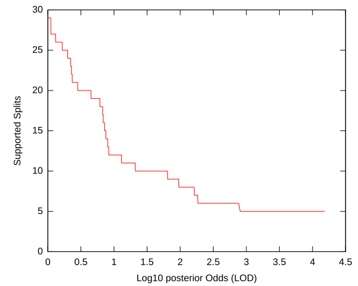
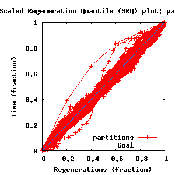
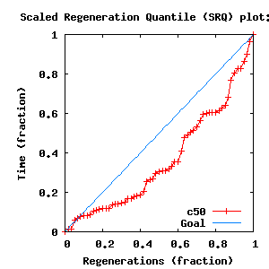
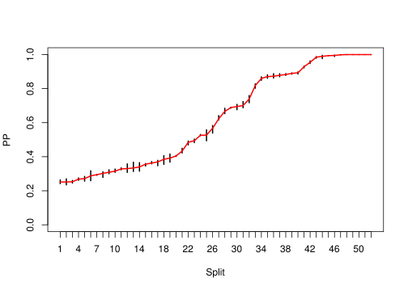
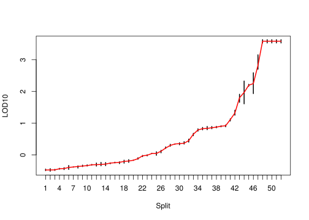

Sections:
directory: /home/biodept/br51/Work
subdirectory: 48-fsa-6
command line: bali-phy 48-fsa.fasta --smodel GTR+DP[4]
directory: /home/biodept/br51/Work
subdirectory: 48-fsa-7
command line: bali-phy 48-fsa.fasta --smodel GTR+DP[4]
directory: /home/biodept/br51/Work
subdirectory: 48-fsa-8
command line: bali-phy 48-fsa.fasta --smodel GTR+DP[4]
directory: /home/biodept/br51/Work
subdirectory: 48-fsa-9
command line: bali-phy 48-fsa.fasta --smodel GTR+DP[4]
| Partition | Sequences | Lengths | Substitution Model | Indel Model |
|---|---|---|---|---|
| 1 | 48-fsa.fasta | 110 - 131RNA nucleotides | GTR+DP[4] | RS07 |
| burn-in = 7530 samples | sub-sample = 20 | P(data|M) = -4083.717 +- 0.596 |
| Complete sample: 15345 topologies | 95% Bayesian credible interval: 14578 topologies |
| chain # | Iterations (after burnin) |
|---|---|
| 1 | 67773 samples |
| 2 | 82377 samples |
| 3 | 70942 samples |
| 4 | 85782 samples |

| Partition support: Summary |
| Partition support graph: SVG |
| 50% consensus | +L | SVG | |||||
| 66% consensus | +L | SVG | |||||
| 80% consensus | +L | SVG | |||||
| 90% consensus | +L | SVG | |||||
| 95% consensus | +L | SVG | |||||
| 99% consensus | +L | SVG | |||||
| 100% consensus | +L | SVG | |||||
| MAP | +L | SVG | |||||
| greedy | +L | SVG |
| Diff | Min. %identity | # Sites | Constant | Informative | ||||
|---|---|---|---|---|---|---|---|---|
| Initial | FASTA | HTML | Diff | 17.7% | 214 | 6 (2.8%) | 187 (87.4%) | |
| Best (WPD) | FASTA | HTML | AU | 28.5% | 212 | 8 (3.77%) | 157 (74.1%) |


| burnin (scalar) | Ne (scalar) | Ne (partition) | ASDSF | MSDSF | PSRF-CI80% | PSRF-RCF |
|---|---|---|---|---|---|---|
| 433 | 1672 | 654.992 | 0.010 | 0.026 | 1.005 | 1.017 |


| Statistic | Median | 95% BCI | ACT | Ne | burnin | PSRF-CI80% | PSRF-RCF | |
|---|---|---|---|---|---|---|---|---|
| prior | -1038 | (-1110, -973.9) | 5.035 | 3048 | 163 | 0.9995 | 0.9989 | Trace |
| prior_A1 | -754.9 | (-820, -700.4) | 2.532 | 6061 | 161 | 1.005 | 1.005 | Trace |
| likelihood | -4041 | (-4082, -3999) | 3.034 | 5058 | 174 | 1.001 | 1.016 | Trace |
| logp | -5079 | (-5139, -5025) | 4.465 | 3437 | 143 | 1.004 | 1.01 | Trace |
| Heat.beta | 1 | |||||||
| Main.mu1 | 0.1603 | (0.1135, 0.2327) | 1.316 | 11661 | 220 | 1.001 | 1.002 | Trace |
| S1.GTR.ag | 0.2004 | (0.1541, 0.2518) | 1.509 | 10170 | 101 | 0.9991 | 0.9949 | Trace |
| S1.GTR.at | 0.2356 | (0.1797, 0.2975) | 3.071 | 4998 | 199 | 0.9998 | 1 | Trace |
| S1.GTR.ac | 0.06871 | (0.04213, 0.1008) | 1.276 | 12032 | 139 | 1 | 1.009 | Trace |
| S1.GTR.gt | 0.04227 | (0.0201, 0.0703) | 1.677 | 9151 | 170 | 1 | 0.9962 | Trace |
| S1.GTR.gc | 0.08834 | (0.06095, 0.1226) | 1.999 | 7676 | 162 | 0.9983 | 1.005 | Trace |
| S1.GTR.tc | 0.36 | (0.2973, 0.4285) | 1.714 | 8956 | 167 | 1.001 | 0.9969 | Trace |
| S1.F.piA | 0.2114 | (0.1794, 0.2487) | 1.802 | 8517 | 107 | 1 | 1.009 | Trace |
| S1.F.piG | 0.2949 | (0.253, 0.3379) | 1.993 | 7700 | 163 | 0.9995 | 1.006 | Trace |
| S1.F.piU | 0.2134 | (0.1848, 0.2455) | 2.084 | 7363 | 108 | 1.002 | 1.008 | Trace |
| S1.F.piC | 0.2786 | (0.2453, 0.3147) | 1.245 | 12325 | 101 | 1 | 0.9935 | Trace |
| S1.DP.f1[S1] | 0.1994 | (0.1248, 0.286) | 1.311 | 11711 | 109 | 1.004 | 1.003 | Trace |
| S1.DP.f2[S1] | 0.3203 | (0.1267, 0.4655) | 1.446 | 10611 | 79 | 1.002 | 0.9893 | Trace |
| S1.DP.f3[S1] | 0.27 | (0.1054, 0.4183) | 1.211 | 12678 | 170 | 0.9988 | 1.006 | Trace |
| S1.DP.f4[S1] | 0.2178 | (0.07536, 0.3739) | 2.295 | 6686 | 127 | 1 | 0.998 | Trace |
| S1.DP.rates1[S1] | 0.008341 | (0.002243, 0.02007) | 1.462 | 10494 | 123 | 1.001 | 1.005 | Trace |
| S1.DP.rates2[S1] | 0.111 | (0.07307, 0.1646) | 2.127 | 7214 | 146 | 1.001 | 0.9983 | Trace |
| S1.DP.rates3[S1] | 0.2623 | (0.1927, 0.3526) | 1 | 15348 | 103 | 0.9993 | 0.9919 | Trace |
| S1.DP.rates4[S1] | 0.6161 | (0.5132, 0.698) | 1.212 | 12660 | 114 | 0.999 | 0.9923 | Trace |
| I1.RS07.logLambda | -3.565 | (-3.889, -3.257) | 2.059 | 7454 | 129 | 1.002 | 0.9993 | Trace |
| I1.RS07.meanIndelLength | 1.949 | (1.632, 2.384) | 2.439 | 6293 | 165 | 0.9999 | 0.9945 | Trace |
| |A1| | 201 | (187, 217) | 9.179 | 1672 | 200 | 0.9474 | 1.016 | Trace |
| #indels1 | 101 | (91, 112) | 2.898 | 5296 | 104 | 0.8727 | 1.008 | Trace |
| |indels1| | 189 | (166, 217) | 4.965 | 3091 | 433 | 0.9771 | 1.013 | Trace |
| #substs1 | 1023 | (1002, 1047) | 6.03 | 2545 | 206 | 0.9667 | 1.017 | Trace |
| |A| | 201 | (187, 217) | 9.179 | 1672 | 200 | 0.9474 | 1.016 | Trace |
| #indels | 101 | (91, 112) | 2.898 | 5296 | 104 | 0.8727 | 1.008 | Trace |
| |indels| | 189 | (166, 217) | 4.965 | 3091 | 433 | 0.9771 | 1.013 | Trace |
| #substs | 1023 | (1002, 1047) | 6.03 | 2545 | 206 | 0.9667 | 1.017 | Trace |
| |T| | 14.64 | (11.97, 18.34) | 2.234 | 6868 | 163 | 0.997 | 0.9929 | Trace |
{kind=link}
{kind=link}
{kind=link}
{kind=link}
{kind=link}
{kind=link}
{kind=link}
{kind=link}
{kind=link}
{kind=link}
{kind=link}
{kind=link}
{kind=link}
{kind=link}
{kind=link}
{kind=link}
{kind=link}
{kind=link}
{kind=link}
{kind=link}
{kind=link}
{kind=link}
{kind=link}
{kind=link}
{kind=link}
{kind=link}
{kind=link}
{kind=link}
{kind=link}
{kind=link}
{kind=link}
{kind=link}
{kind=link}
{kind=link}
{kind=link}
{kind=link}
{kind=link}
{kind=link}
{kind=link}
{kind=link}
{kind=link}
{kind=link}
{kind=link}
{kind=link}
{kind=link}
{kind=link}